AR — Argentina
**Argentina: a small positive spillover from a 200bp US rate cut, then a late drag**
The shock in English is a 200 basis-point (2.00 percentage-point) cut in United States interest rates. For Argentina, the main result is a modest *positive* GDP response that peaks at +0.0521% above baseline in the ninth quarter — a limited spillover, not a large hit. The path is small and slow: +0.0033% in Q1, building through +0.0489% in Q8, peaking at +0.0521% in Q9, then fading to roughly zero by Q15 and turning negative from Q16, ending at −0.0423% by Q20. So the near-term effect is mildly expansionary, but it does not last; by the end of the horizon the level of activity sits slightly *below* baseline.
**Demand and trade.** Household consumption follows a similar hump: it rises to about +0.0178% by Q9, then fades and turns negative in Q16, reaching −0.0205% by Q20. Private investment is the strongest domestic demand component, peaking at +0.1246% in Q8 before turning negative in Q14 and ending at −0.0855%. Net exports — this model does not split imports from exports, so this is the trade balance — start *negative* at −0.0123% in Q1, stay negative through Q9, then improve steadily, peaking at +0.0193% in Q15 and easing to +0.0117% by Q20. Government spending is essentially flat early, dips to −0.0084% around Q9, then recovers and peaks at +0.0088% by Q20. Government debt rises gradually, peaking at +0.0124% in Q14 before fading back to +0.0007% by Q20.
**External / FX.** The real exchange rate — where an increase is a real depreciation (a weaker, more competitive home currency) and a decrease is a real appreciation — falls to −0.2161% by Q8, meaning the peso is *appreciating* in real terms through the middle of the horizon. That real appreciation lines up with the initially negative net exports: a stronger home currency makes the trade balance worse early on. After Q8 the RER turns and rises, crossing into positive territory in Q13 and reaching +0.0747% by Q20 — a real depreciation — which coincides with the later improvement in net exports. So the trade balance and the exchange rate move together in the expected direction, without needing an import/export split.
**Labour.** Employment rises modestly, peaking at +0.0185% in Q12, then fades and turns negative in Q18, ending at −0.0181%. Unemployment falls to −0.0122 percentage points by Q11, then reverses and ends at +0.0050pp by Q20. Real wages dip early, bottoming at −0.0143% around Q6, then recover strongly and peak at +0.0505% in Q17, finishing at +0.0389%. The labour market therefore tightens early and loosens late, with real wages improving only after the initial inflation dip.
**Prices.** CPI inflation falls to −0.0171pp in Q1, fades by Q3, turns positive in Q5, peaks at +0.0136pp in Q11, and ends at −0.0072pp by Q20. Domestic inflation behaves similarly: −0.0120pp in Q1, fading by Q3, turning positive in Q5, peaking at +0.0095pp in Q11, and ending at −0.0050pp. Firms' marginal cost rises to +0.0314% in Q9, then turns negative in Q16 and ends at −0.0254%. The CPI_3yr_pp figure of 0.0248 is the sum of quarterly CPI inflation over Q1–Q12, not the peak.
**Financial conditions.** The local policy rate initially falls to −0.0205pp in Q1, then rises to +0.0439pp by Q12, and ends at −0.0245pp by Q20. Government 2-year yields rise to +0.0332pp by Q9 before turning negative in Q15 and ending at −0.0339pp. The 5-year yield edges up early, turns negative in Q8, and ends at −0.0142pp. The 10-year yield is nearly flat, peaking at +0.0021pp in Q8 and ending at −0.0040pp. Bond prices rise to +0.1216% by Q8, then fall sharply to −0.1097% by Q12, and recover to +0.0613% by Q20. Equity prices are the standout: +0.4881% by Q8, then fading and turning negative in Q14, ending at −0.1149%. Tobin's Q peaks at +0.0872% in Q8 and ends at −0.0598%. House prices rise steadily to +0.0406% in Q13 and ease to +0.0059% by Q20. Bank credit is essentially unchanged, peaking at just +0.0001% by Q16, and the lending spread is flat at 0.0pp throughout.
**Sectoral and capital.** Manufacturing GDP is the strongest sector early, peaking at +0.0709% in Q8, then turning negative in Q13 and ending at −0.0319%. Services GDP peaks at +0.0298% in Q9, turns negative in Q16, and ends at −0.0242%. The capital stock edges up to +0.0047% by Q13 and ends at +0.0023%, a very small accumulation effect.
**Timing.** The GDP gain is largest in Q9, and it has largely faded by Q15; by Q20 the level is below baseline. The equity and investment peaks also land in Q8, with the reversal arriving in the mid-teens.
**Close.** These are model impulse responses relative to baseline, not forecasts. They describe how Argentina's block responds to a 200bp US rate cut under the model's estimated transmission, with the near-term boost concentrated in investment, equities and manufacturing, and a late drag as the exchange rate, trade balance and financial conditions reverse.
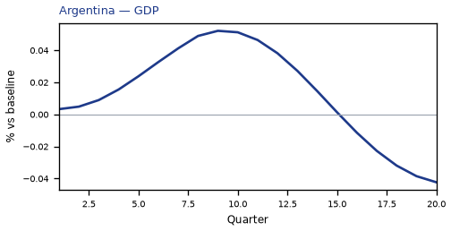
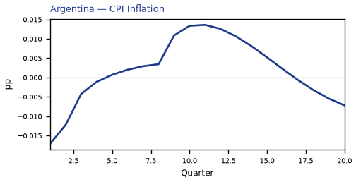
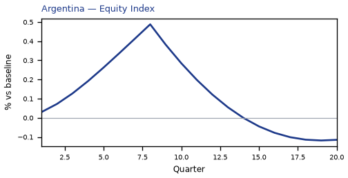
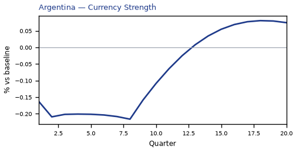
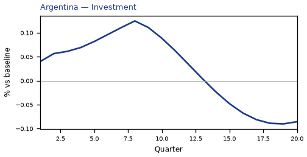
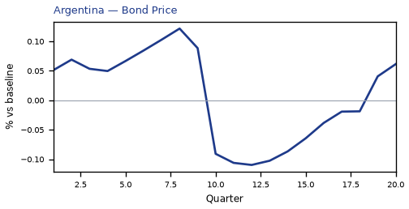
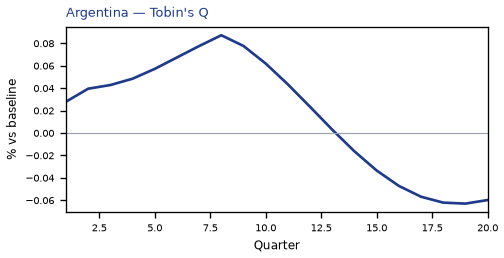
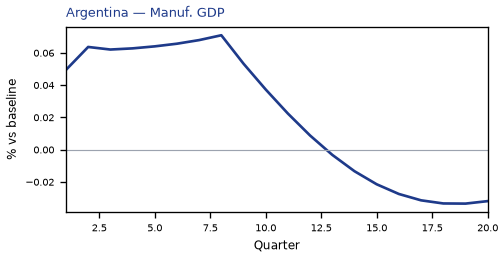
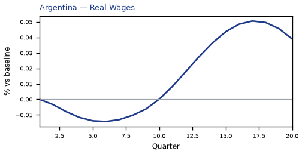

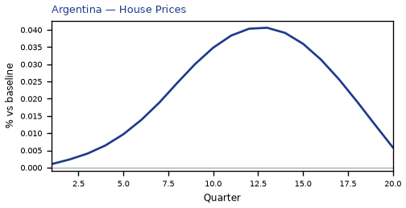
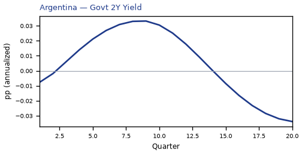
source=live · global_macro_v5 · contract v6 · Q1–Q20 JSON · not financial advice